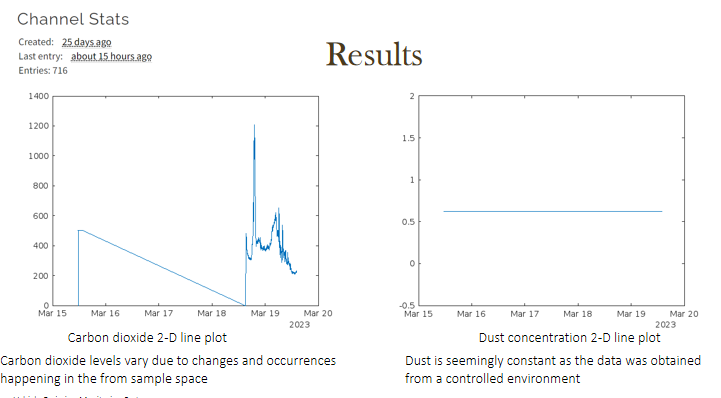

Project Introduction
With so many pollutants in the environment, ranging from industries and motor vehicles, it is now necessary to keep track of the damage
caused. This is important in order to facilitate making informed decisions in different areas depending on the level or extent of pollutants.
This project aims to create an all-in-one device to detect and record real-time data of vehicle emissions such as dust and Carbon(IV) Oxide.
Project Images

To monitor the amount of carbon dioxide levels and dust being emitted using IoT will help regulate the emission of dust and carbon dioxide through integration of better
technology in cars( hybrid vehicles), introduction of different types of fuels for vehicles such as hydrogen gas, this thus can help the government reduce road unworthy vehicles

Fossil fuel powered road transport represents the ,ost significant source of transport related air pollution.
The image above from the European Environment Agency displays sources of vehicle pollutants.

We set up the prototype as seen in the figure above.
The following equipment was used:
1. Shinyei PPD42NS
2. ELT S300
3. GSM SIM900
4. Power Source
5. MTC (Arduino Uno)
6. Connecting wires
The PPD42NS is an air particle sensor, typically, it's a dust sensor.
Based on the light scattering principle, it always detects airborne particles.
It provides a good indication of the air quality in an environment by measuring the dust concentration,
with long-term high sensitivity and reliable data.

Thingspeak is a platform that offers resources for processing and visuallizing data
from IoT devices.
The image above shows the results for both Carbon(IV)Oxide levels and dust concentration.
Sensor and micro-controller(Arduino) code
int pin = 8;
unsigned long duration;
unsigned long starttime;
unsigned long sampletime_ms = 2000;
unsigned long lowpulseoccupancy = 0;
float ratio = 0;
float concentration = 0;
void setup() {
Serial.begin(9600);
pinMode(8,INPUT);
starttime = millis();
}
void loop() {
duration = pulseIn(pin, LOW);
lowpulseoccupancy = lowpulseoccupancy+duration;
if ((millis()-starttime) >= sampletime_ms) //if the sampel time = = 30s
{
ratio = lowpulseoccupancy/(sampletime_ms*10.0);
concentration = 1.1*pow(ratio,3)-3.8*pow(ratio,2)+520*ratio+0.62;
Serial.print("Concentration = ");
Serial.print(concentration);
Serial.println(" pcs/0.01cf");
Serial.println("\n");
lowpulseoccupancy = 0;
starttime = millis();
}
}
The above code was written to integrate the sensor data to the other components of the microcontroller such as esp82ss.
This module provides an online presence for the arduino board allowing it to send and upload data to any predefined platform on the net.
In this case, Thingspeak.com.
The ELT S300 is a Carbon(IV) Oxide sensor.
We preferred the module because of persistent stability independent from
Temperature and Long Battery-time besides high
accuracy and small size.
The module appears as a gold plated circuit board. We managed to interface it with the Arduino to transmit data to Thingspeak.
The image below shows the layout of the devices. The top right is the GSM module, the one programmed to
create a link to the internet to facilitate transfer of the real time data from the sensors to Thingspeak.

The main challenges encountered was in the actual application in motor vehicles.
It is important to note that a main factor for IoT device application is power source. The Arduino board
has a supply voltage of 12 Volts.
On the other hand, a module such as the GSM module require a higher voltage and current source.
The solution suggested was the use of an adaptor in order to regulate the voltage from the car battery to an
optimum level for the module's performance.